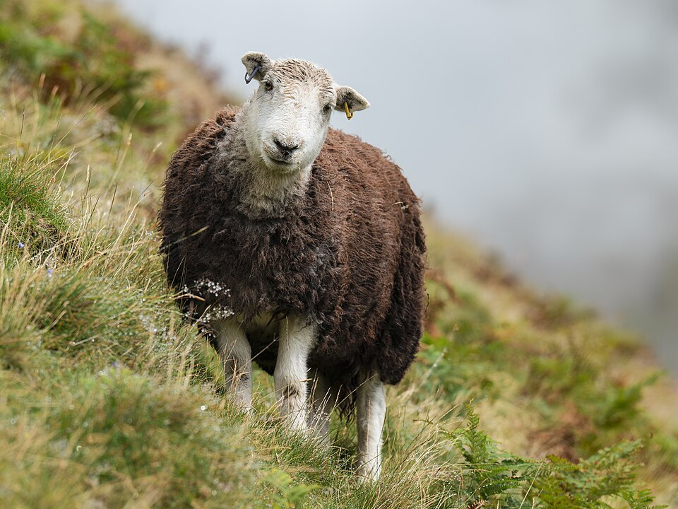

A landscape shaped by nature, centuries of farming, and literary inspiration.
The Lake District National Park is located in Cumbria, in the north-west of England. Covering an area of 2,362 square kilometres, it is the largest national park in England and the second largest in the United Kingdom, after the Cairngorms National Park in Scotland.
The park was officially established on 9 May 1951, just one month after the Peak District became the UK's first national park. In 2017, it was awarded UNESCO World Heritage Site status, recognising it as a cultural landscape of global importance — shaped not only by nature, but by thousands of years of farming traditions and human settlement.

Photo: Aneta Foubíková / Unsplash
The journey of our National Park
Designated as a National Park to protect its outstanding landscape for future generations.
Awarded World Heritage status, recognizing it as a cultural landscape of global importance.
Ongoing efforts to balance tourism, traditional farming, and wildlife conservation.
England's remarkable natural achievements, all in one place
The highest mountain in England.
England's longest lake at 10.5 miles (17 km).
England's deepest lake at 74 metres.
Only Bassenthwaite Lake is officially a "lake" — all others are "meres" or "waters".
The park includes 42 km of coastline and estuaries.
At least 200 fell tops, with writer Alfred Wainwright famously documenting 214.
The Lake District has long inspired writers, poets, and artists. William Wordsworth, born in Cockermouth and buried in Grasmere churchyard, described the region as a kind of national property that should be open to all. His former home, Dove Cottage in Grasmere, is open to visitors.
Beatrix Potter, the author and illustrator of The Tale of Peter Rabbit, lived at Hill Top farmhouse in the village of Near Sawrey. Managed today by the National Trust, Hill Top is one of the most visited sites in the park. The area also inspired the Romantic poet Samuel Taylor Coleridge and the artist John Ruskin.
Born in Cockermouth; lived at Dove Cottage, Grasmere. A central figure of the Romantic movement.
Author of The Tale of Peter Rabbit; her home Hill Top in Near Sawrey is managed by the National Trust.
Among the many artists and poets inspired by the landscape of the Lake District.